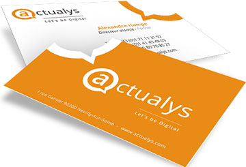

J’ai réalisé mon stage dans l’entreprise Actualys qui est une agence de développement de sites internet. J’ai obtenu ce stage grâce à mon oncle qui est directeur artistique et de création dans cette entreprise. Cette agence est une petite entreprise d’une quinzaine d’employés en France et ayant un partenaire au Vietnam (Ozerside) qui est composé en grande partie de développeurs.
Cette entreprise est organisée en quatres pôles :
Pôle commercial
composé des chefs de projets qui établissent une étroite connection avec les clients
Pôle création
qui réalise les maquettes des sites internet

Pôle intégration
composé des développeurs Front qui s'occupent de traduire en code les créations du pôle création
Pôle développement
qui font le lien entre le site et la base de donnée